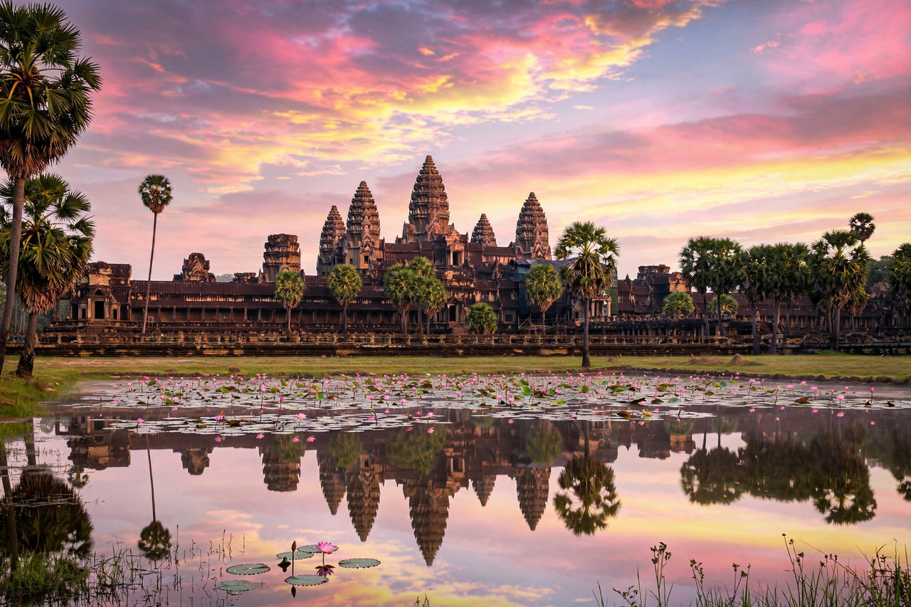

Angkor Wat

Angkor Wat across its lotus pond at dawn, five towers silhouetted
Angkor Wat is a temple complex in Cambodia, the largest religious monument in the world, built in the first half of the 12th century by the Khmer king Suryavarman II (r. 1113–c. 1150) as his state temple and probable mausoleum. Dedicated originally to the Hindu god Vishnu — unusual in a region of Shiva temples — it represents Mount Meru, home of the gods, in stone: five towers for its peaks, a vast moat for the cosmic ocean. It gradually transformed into a Buddhist temple, was never completely abandoned, and appears on Cambodia's flag — the only national flag bearing a building.
Architecture and art
The complex covers some 162 hectares within its moat. Three concentric galleries rise to the central towers; the outer walls carry nearly 800 metres of bas-reliefs — the Churning of the Ocean of Milk, heavens and hells, royal processions, and episodes from the Ramayana and Mahabharata — and thousands of carved apsaras (celestial dancers). Built of an estimated five to ten million sandstone blocks hauled from a quarry 40 km away, aligned with astronomical precision, it was constructed within a few decades.
Rediscovery and conservation
Known continuously to Cambodians and visited by Portuguese missionaries in the 16th century, Angkor Wat was brought to wide Western attention by the French naturalist Henri Mouhot's account (published 1864). Under French colonial archaeology and, after the Khmer Rouge years, international conservation missions, the temple has been studied, partly dismantled and rebuilt (anastylosis), and inscribed as a UNESCO World Heritage Site in 1992.